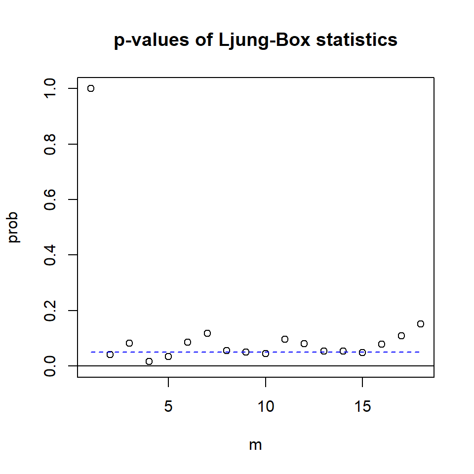
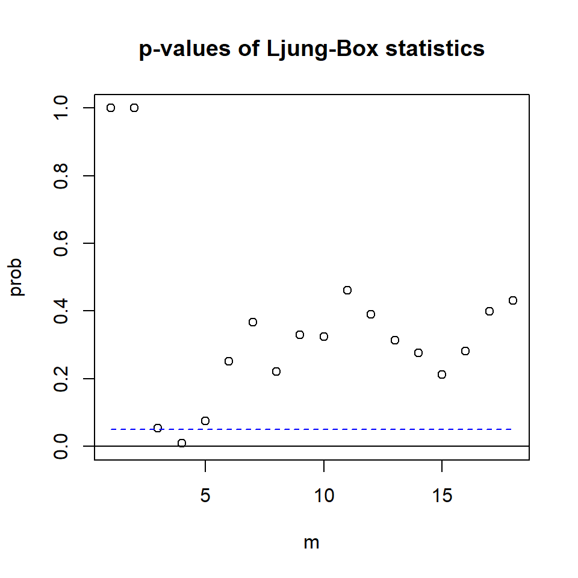

![]()
year mon uk ca us
1 1980 1 172436 624794 5908500
2 1980 4 169359 623433 5787400
3 1980 7 169038 623215 5776600
4 1980 10 167180 630215 5883500
5 1981 1 166052 645957 6005700
6 1981 4 166393 651954 5957800Tema 2: Análisis multivariado de series temporales(2)
VARMA(p,q)
Contenido
VARMA(p,q)
VAR(p)
Causalidad de Granger
Invertibilidad
Estacionariedad
Estimación, selección de modelos y diagnósticos
VMA(q)
VARMA(p,q)
- Conocido como VARMA o MARMA.
- ARMA(p,q) vectorial de \(k\) dimensiones se define como
\[X_{t}=\phi_0+ \sum_{i=1}^p \phi_i X_{t-i} - \sum_{j=1}^q \theta_j {a}_{t-j} +a_{t}\] con \(\phi_p, \theta_q \neq 0\) y \(\Sigma_w\) definida positiva.
- Los coeficientes \(\phi_i :i=1,...,p\), \(\theta_j:j=1,...,q\) son matrices \(k \times k\) y \(a_t\) es ruido blanco.
Si este modelo es estacionario: \[X_t-\sum_{j=1}^p \phi_j X_{t-j}=\phi_0- \sum_{j=1}^q \theta_j {a}_{t-j} +a_t\]
Aplicamos la esperanza en ambos lados, se obtiene: \(\mu- \sum\limits_{j=1}^p \phi_j \mu=\phi_0\)
Sustituimos \(\phi_0\) en la ecuación anterior
\[X_t-\sum_{j=1}^p \phi_j X_{t-j}=\mu- \sum_{j=1}^p \phi_j \mu - \sum_{j=1}^q \theta_j {a}_{t-j} +a_t\] \[\Rightarrow (X_t-\mu)-\sum_{j=1}^p \phi_j (X_{t-j}-\mu)=- \sum_{j=1}^q \theta_j {a}_{t-j} +a_t\]
- De esta forma, podemos reescribir el modelo centrado como:
\[(X_t-\mu)-\sum_{j=1}^p \phi_j (X_{t-j}-\mu)=- \sum_{j=1}^q \theta_j {a}_{t-j} +a_t\]
o bien,
\[\tilde{X_t}-\sum_{j=1}^p \phi_j \tilde{X}_{t-j}= a_t - \sum_{j=1}^q \theta_j {a}_{t-j}\] donde \(\tilde{X_t}=X_t-\mu\).
Entonces, si un VARMA es estacionario se puede expresar su versión centrada, o bien sin pérdida de generalidad suponer que \(\phi_0=0\).
Además, su representación es similar al caso univariado
\[\phi(B) X_{t}= \theta(B) a_{t}\] en donde
\(\phi(B)=I- \phi_1 B-...- \phi_p B^p\) es el operador autorregresivo y
\(\theta(B)=I-\theta_1 B-...- \theta_q B^q\) es el operador de medias móviles.
VAR(p)
Contenido
VARMA(p,q)
VAR(p)
Causalidad de Granger
Invertibilidad
Estacionariedad
Estimación, selección de modelos y diagnósticos
VMA(q)
VAR(p)
El modelo VAR(p): \[X_{t}=\phi_0+\phi_1 X_{t-1}+...+\phi_pX_{t-p}+a_{t}\] donde \(\phi_0\) es un vector de dimensión \(k\), \(\phi_i\) matrices \(k \times k\) para \(i=1,...,p\), \(\phi_p \neq 0\) y \(a_t\) es una secuencia de i.i.d. vectores aleatorios con media 0 y matriz de covariancias \(\Sigma_a\), que es definida positiva.
Su representación con el operador autorregresivo. \[\phi(B) X_{t}=\phi_0+a_{t}\] donde \(\phi(B)=I_k- \phi_1 B-...- \phi_p B^p\) es el operador autorregresivo.
De la misma forma, se puede considerar su versión centrada (si es estacionario): \[\phi(B) \tilde{X}_{t}= a_{t}\]
VAR(1)
- Considere el modelo VAR(1) con \(k=2\):
\[X_{t}=\phi_0+\phi_1 X_{t-1} + a_{t}\]
- Expresando explícitamente la ecuación,
\[\begin{bmatrix}X_{1,t}\\ X_{2,t} \end{bmatrix} =\begin{bmatrix}\phi_{10}\\ \phi_{20} \end{bmatrix} + \begin{bmatrix}\phi_{1,11} & \phi_{1,12} \\ \phi_{1,21} & \phi_{1,22} \end{bmatrix} \begin{bmatrix}X_{1,t-1}\\ X_{2,t-1} \end{bmatrix} +\begin{bmatrix}a_{1,t}\\ a_{2,t} \end{bmatrix}\]
- o bien,
\[X_{1,t}=\phi_{10}+\phi_{1,11}X_{1,t-1}+\phi_{1,12}X_{2,t-1}+a_{1,t}\]
\[X_{2,t}=\phi_{20}+\phi_{1,21}X_{1,t-1}+\phi_{1,22}X_{2,t-1}+a_{2,t}\]
- Suponga que \(\phi_{1,12}=\phi_{1,21}=0\), entonces
\[\begin{bmatrix}X_{1,t}\\ X_{2,t} \end{bmatrix} =\begin{bmatrix}\phi_{10}\\ \phi_{20} \end{bmatrix} + \begin{bmatrix}\phi_{1,11} & 0 \\ 0 & \phi_{1,22} \end{bmatrix} \begin{bmatrix}X_{1,t-1}\\ X_{2,t-1} \end{bmatrix} +\begin{bmatrix}a_{1,t}\\ a_{2,t} \end{bmatrix}.\]
- Evaluando cada ecuación:
\[X_{t,1}=\phi_{10}+\phi_{1,11}X_{1,t-1}+a_{t,1}\]
\[X_{t,2}=\phi_{20}+\phi_{1,22}X_{2,t-1}+a_{t,2}\]
- Tenemos simplemente dos procesos de AR(1).
- Suponga que \(\phi_{1,12}=0\) y \(\phi_{1,21} \neq 0\), entonces
\[\begin{bmatrix}X_{1,t}\\ X_{2,t} \end{bmatrix} =\begin{bmatrix}\phi_{10}\\ \phi_{20} \end{bmatrix} + \begin{bmatrix}\phi_{1,11} & 0 \\ \phi_{1,21} & \phi_{1,22} \end{bmatrix} \begin{bmatrix}X_{1,t-1}\\ X_{2,t-1} \end{bmatrix} +\begin{bmatrix}a_{1,t}\\ a_{2,t} \end{bmatrix}\]
- Evaluando cada ecuación:
\[\begin{align} X_{1,t}=\phi_{10}+\phi_{1,11}X_{1,t-1}+a_{1,t} \\ X_{2,t}=\phi_{20}+\phi_{1,21}X_{1,t-1}+\phi_{1,22}X_{2,t-1}+a_{2,t} \end{align}\]
Tenemos que \(X_{1,t}\) no depende de los valores pasados de \(X_{2,t}\), pero \(X_{2,t}\) depende de los valores pasados de \(X_{1,t}\). Se dice que \(X_{1,t}\) y \(X_{2,t}\) tienen una relación de función de transferencia.
En econometría, se dice que \(X_{t,1}\) causa a \(X_{t,2}\) en el sentido de Granger, pero inversamente no: \(X_{t,2}\) no causa a \(X_{t,1}\) en el sentido de Granger.
Causalidad de Granger
Contenido
VARMA(p,q)
VAR(p)
Causalidad de Granger
Invertibilidad
Estacionariedad
Estimación, selección de modelos y diagnósticos
VMA(q)
Causalidad de Granger
- El concepto de causalidad de Granger fue introducido por Granger (1969) considerando una serie bivariada \((X_{1,t,},X_{2,t})\) y el ajuste de un modelo VAR y los modelos univariados para realizar predicción.
- Se dice que \(X_{1,t}\) causa a \(X_{2,t}\) en el sentido de Granger, si la predicción usando modelo VAR es más precisa que la predicción utilizando el modelo univariado.
- Formalmente, sean:
- \(F_t\) toda la información disponible hasta el tiempo t (inclusive),
- \(F_{-i,t}\) como toda la información \(F_t\) pero sin el \(i-\)ésimo componente \(X_{i,t}\).
- En término del VAR(1) bidimensional descrito anteriormente,
- \(F_t=\left\lbrace X_t,X_{t-1},X_{t-2},... \right\rbrace\)
- \(F_{-1,t}=\left\lbrace X_{2,t},X_{2,t-1},X_{2,t-2},... \right\rbrace\)
- \(F_{-2,t}=\left\lbrace X_{1,t},X_{1,t-1},X_{1,t-2},... \right\rbrace\)
- Sean:
- \(X_{j,t+h}|F_{t}\), \(j=1,2\) como las predicciones \(h\) pasos adelante basado en toda la información disponible \(F_{t}\) y \(e_{j,t+h}|F_{t}\) sus errores de pronósticos respectivos.
- \(X_{j,t+h}|F_{-i,t}\), \(j=1,2\) como las predicciones \(h\) pasos adelante basado en \(F_{-i,t}\) y \(e_{j,t+h}|F_{-i,t}\) sus errores de pronósticos respectivos.
- Se dice que que \(X_{1,t}\) causa a \(X_{2,t}\) en el sentido de Granger, si
\[Var\left(e_{2,t+h}|F_{t}\right)< Var\left(e_{2,t+h}|F_{-1,t}\right)\]
- Retomando el VAR(1), con
\[\begin{bmatrix}X_{1,t}\\ X_{2,t} \end{bmatrix} =\begin{bmatrix}\phi_{10}\\ \phi_{20} \end{bmatrix} + \begin{bmatrix}\phi_{1,11} & 0 \\ \phi_{1,21} & \phi_{1,22} \end{bmatrix} \begin{bmatrix}X_{1,t-1}\\ X_{2,t-1} \end{bmatrix} +\begin{bmatrix}a_{1,t}\\ a_{2,t} \end{bmatrix}\]
- Se dice que \(X_{1,t}\) causa a \(X_{2,t}\) en el sentido de Granger si \(\phi_{1,21} \neq 0\). Sin embargo, \(X_{1,t}\) no causa a \(X_{2,t}\) en el sentido de Granger.
Recuerden que \(\Sigma_a\) no necesariamente es una matriz diagonal.
Si \(\Sigma_a\) no es una matriz diagonal, se dice que \(X_{1,t}\) y \(X_{2,t}\) tienen causalidad instantánea en sentido de Granger.
Invertibilidad
Contenido
VARMA(p,q)
VAR(p)
Causalidad de Granger
Invertibilidad
Estacionariedad
Estimación, selección de modelos y diagnósticos
VMA(q)
Invertibilidad
- Por definición VAR(p) es invertible ya que está expresada en término de sus valores pasados:
\[X_t=c+a_t+\sum_{j=0}^\infty \pi_j X_{t-j}\]
Estacionariedad
Contenido
VARMA(p,q)
VAR(p)
Causalidad de Granger
Invertibilidad
Estacionariedad
Estimación, selección de modelos y diagnósticos
VMA(q)
Estacionariedad de un VAR(1)
Empezamos con un VAR(1):
Sin pérdida de generalidad, suponga que \(\phi_0=0\),
\[\begin{eqnarray}X_t &=& \phi_1 X_{t-1}+a_t\\ &=& \phi_1 (\phi_1 X_{t-2}+a_{t-1})+a_t \\ &=& \phi_1^2 X_{t-2}+\phi_1 a_{t-1}+a_t \\ &=& \phi_1^3 X_{t-3}+ \phi_1^2 a_{t-2}+\phi_1 a_{t-1}+a_t \\ &=& \vdots \\ &=& \phi_1^J X_{t-J}+ \sum_{j=0}^{J-1} \phi_1^j a_{t-j} \end{eqnarray}\]
- Al igual que el caso univariado, para que el proceso esté bien definido, es necesario que \(\phi_1^{J}\rightarrow 0\) cuando \(J \rightarrow \infty\).
La condición de \(\phi_1^{J}\rightarrow 0\) cuando \(J \rightarrow \infty\) significa que todos los autovalores de \(\lambda_i\) de la matriz \(\phi_1\) satisfacen la condición de que \(\lambda_i^{J}\rightarrow 0\) cuando \(J \rightarrow \infty\).
Y esto significa que el valor absoluto de todos los autovalores \(\lambda_i\) de \(\phi_1\) es menor que 1.
Recordemos que para la matriz \(\phi_1\), sus autovalores son las soluciones de la ecuación: \[|\lambda I_k - \phi_1|=0.\]
y es posible reescrribir la condición \[\lambda^k \left|I_k - \phi_1\frac{1}{\lambda}\right|=0.\]
Es decir, \(\left|I_k - \phi_1 x\right|=0\) donde \(x=1/\lambda\). Los autovalores de \(\phi_1\) son inversos de la solución de esta ecuación.
Como consecuencia, la condición necesaria y suficiente de la estacionariedad de un VAR(1) es que las soluciones de la ecuación \(\left|I_k - \phi_1 x\right|=0\) tengan valor absoluto mayor a 1.
Es decir, la condición de estacionariedad de un VAR(1) es que las soluciones de \(|\phi(B)|=0\) estén fuera del círculo unitario.
VAR(p)
El modelo VAR(p): \[X_{t}=\phi_0+\phi_1 X_{t-1}+...+\phi_pX_{t-p}+a_{t}\] donde \(\phi_0\) es un vector de dimensión \(k\), \(\phi_i\) matrices \(k \times k\) para \(i=1,...,p\), \(\phi_p \neq 0\) y \(a_t\) es una secuencia de i.i.d. vectores aleatorios con media 0 y matriz de covariancias \(\Sigma_a\), que es definida positiva.
De la misma forma, se puede considerar su versión centrada (si es estacionario): \[\phi(B) \tilde{X}_{t}= a_{t}\]
donde \(\phi(B)=I_k- \phi_1 B-...- \phi_p B^p\) es el operador autorregresivo, y \(\tilde{X}_{t}={X}_{t}-\mu_X\).
VAR(p) como representación de VAR(1)
Sin pérdida de generalidad, asuma \(\phi_0=0\). Defina \(\boldsymbol{X}_t=\left(X_t',X_{t-1}',...,X_{t-p+1}' \right)'\) una serie temporal \(pk-\)dimensional.
El modelo VAR(p) se puede escribir como:
\[\boldsymbol{X}_t=\Phi \boldsymbol{X}_{t-1}+\boldsymbol{b}_t,\] donde
\[\underset{(Kp \times 1)}{\boldsymbol{X}_{t}}= \begin{bmatrix}X_{t}\\ \vdots \\ X_{t-p+1} \end{bmatrix},~~~\underset{(Kp \times Kp)}{\Phi}=\begin{bmatrix}\phi_{1} & \phi_2 & ... & \phi_{p-1} & \phi_{p} \\ I & 0 & ... & 0 & 0 \\ 0 & I & ... & 0 & 0\\ \vdots & \vdots & \ddots & \vdots & \vdots \\ 0 & 0 & ... & I & 0 \end{bmatrix}~,\]
VAR(p) como representación de VAR(1)
\[\underset{(Kp \times 1)}{\boldsymbol{b}_{t}}= \begin{bmatrix}a_{t}\\ 0 \\ \vdots\\ 0 \end{bmatrix}\]
- La matrix \(\Phi\) es conocida como la matriz compañera del polinomio autorregresivo \(\phi(B)\).
Condición de estacionariedad de VAR(p)
Como consecuencia de que \(\boldsymbol{X}_t\) es VAR(1), la condición de estacionariedad es VAR(1) es que las soluciones de la ecuación \(\left|I_{kp} - \Phi B\right|=0\) tengan valor absoluto mayor a 1.
Utilizando resultados de matrices en bloques, se puede concluir que la condición de estacionariedad de VAR(p) es que todas las soluciones de \(\left|I_{kp} - \Phi B\right|=|\phi(B)|=0\) estén fuera del círculo unitario.
Estimación, selección de modelos y diagnósticos
Contenido
VARMA(p,q)
VAR(p)
Causalidad de Granger
Invertibilidad
Estacionariedad
Estimación, selección de modelos y diagnósticos
VMA(q)
Estimación
- Existen una extensa literatura en la estimación de un VAR.
- Los más utilizados:
- mínimos cuadrados,
- máxima verosimilitud y
- métodos Bayesianos.
Estimación de Máxima Verosimilitud
- Asumiendo que \(a_t\) es normal multivariada y suponga que \(X_{1:T}=\left\lbrace X_1,...,X_T \right\rbrace\) son observaciones en el tiempo, la función de verosimlitud es:
\[\left. \begin{eqnarray}L\left(X_{(p+1):T}|X_{1:p},\beta,\Sigma_a \right) &=& \prod_{t=p+1}^T p \left( X_{t} |X_{1:(t-1)},\beta,\Sigma_a\right)\\ &=& \prod_{t=p+1}^T p \left( a_{t} |X_{1:(t-1)},\beta,\Sigma_a\right) \\ &=& \prod_{t=p+1}^T \frac{1}{(2\pi)^{k/2}|\Sigma_a|^{1/2}} \exp\left[ \frac{-1}{2}a_t'\Sigma_a^{-1} a_t \right] \\ &\propto& |\Sigma_a|^{-(T-p)/2} \exp\left[ \frac{-1}{2} \sum_{t=p+1}^{T} tr(a_t'\Sigma_a^{-1} a_t) \right] \end{eqnarray}\right.\]
- la función de log-verosimlitud es: \[\left. \begin{eqnarray}\ell \left(\beta,\Sigma_a \right) &=& c- \frac{T-p}{2} \log|\Sigma_a| -\frac{1}{2} \sum_{t=p+1}^{T} tr(a_t'\Sigma_a a_t) \\ &=& c- \frac{T-p}{2} \log|\Sigma_a| -\frac{1}{2}tr\left(\Sigma_a^{-1} \sum_{t=p+1}^{T} a_t' a_t\right) \end{eqnarray}\right.\]
donde \(c\) es una constante que no influye en el proceso de optimización.
- Note que las propiedades \(tr(CD)=tr(DC)\) y \(tr(C+D)=tr(C)+tr(D)\) son utilizadas.
Se puede reescribir la función de log-verosimlitud como: \[\ell \left(\beta,\Sigma_a \right) = c- \frac{T-p}{2} \log|\Sigma_a| -\frac{1}{2} S(\beta)\] donde \(S(\beta)\) es la cantidad a minimizar del método de mínimos cuadrados.
No vamos a entrar a los detalles de la distribución muestral de los estimadores.
Ejemplo
- El producto interno bruto de Reino Unido, Canadá y Estados Unidos de segundo trimestre del 1980 al segundo trimestre del 2011.
- Los datos son ajustados estacionalmente.

- Suponga que \(X_t\) es el valor de un activo en el tiempo \(t\), el retorno en el tiempo \(t\), \(r_t\), es:
\[r_t=\frac{X_t-X_{t-1}}{X_{t-1}}\]
Despejando la expresión anterior: \[X_t=(1+r_t)X_{t-1}\] \[\Rightarrow \ln X_t=\ln (1+r_t)+ \ln X_{t-1}\] \[\Rightarrow \nabla \ln X_t = \ln X_t - \ln X_{t-1}=\ln (1+r_t) \approx r_t,\] si \(r_t\) son cambios porcentuales pequeños.
A partir de aquí, llamamos \(r_t\) o \(\nabla \ln X_t\) retornos y dicho valor es conocido como la tasa del crecimiento porcentual.
- Se calculan sus retornos en porcentajes, i.e. retornos*100:

Constant term:
Estimates: 0.1713324 0.1182869 0.2785892
Std.Error: 0.06790162 0.07193106 0.07877173
AR coefficient matrix
AR( 1 )-matrix
[,1] [,2] [,3]
[1,] 0.434 0.189 0.0373
[2,] 0.185 0.245 0.3917
[3,] 0.322 0.182 0.1674
standard error
[,1] [,2] [,3]
[1,] 0.0811 0.0827 0.0872
[2,] 0.0859 0.0877 0.0923
[3,] 0.0940 0.0960 0.1011
Residuals cov-mtx:
[,1] [,2] [,3]
[1,] 0.28933472 0.01965508 0.06619853
[2,] 0.01965508 0.32469319 0.16862723
[3,] 0.06619853 0.16862723 0.38938665
det(SSE) = 0.02721916
AIC = -3.459834
BIC = -3.256196
HQ = -3.377107 El modelo estimado es:
\[\begin{bmatrix}X_{1t}\\ X_{2t}\\ X_{3t} \end{bmatrix} =\begin{bmatrix}0.17\\ 0.12 \\ 0.28 \end{bmatrix} + \begin{bmatrix}0.43 & 0.19 &0.04 \\ 0.19 & 0.25 & 0.39 \\ 0.32 & 0.18 & 0.17 \end{bmatrix} \begin{bmatrix}X_{1,t-1}\\ X_{2,t-1} \\ X_{3,t-1} \end{bmatrix} +\begin{bmatrix}a_{1t}\\ a_{2t} \\ a_{3t} \end{bmatrix}\]
\[\text{donde}~~a_t \sim N\left(0, \Sigma_a \right), ~\text{con}~ \Sigma_a=\begin{bmatrix} 0.08 & 0.02 & 0.07 \\ 0.02 & 0.32 & 0.17 \\ 0.07 & 0.17 & 0.39 \end{bmatrix}\]
Selección del orden de un VAR(p)
¿Cómo se selecciona el orden de un VAR?
- Pruebas de razón de verosimilitud secuencial
- Criterio de información
1. Pruebas de razón de verosimilitud secuencial
La idea básica es comparar un VAR(p) con un VAR(p-1).
Formalmente, se plantean: \(H_0:\phi_p=0\) \(H_1:\phi_p \neq 0\)
Sea \(\boldsymbol{\beta}=\left[\phi_0,\phi_1,...,\phi_p \right]\) el conjunto de las matrices de coeficientes de un VAR(p), y \(\Sigma_{a,p}\) la matriz de covariancias de las inovaciones del modelo.
Bajo el supuesto de normalidad, la razón de verosimilitud es dada por
\[\Delta= \frac{\max L(\beta_{p-1},\Sigma_a)}{\max L(\beta_{p},\Sigma_a)}= \left( \frac{|\hat{\Sigma}_{a,p}|}{|\hat{\Sigma}_{a,p-1}|} \right)^{(T-p)/2}\]
- El estadístico es dado por
\[M(p)= -(T-p-0.5-kp) \ln \left( \frac{|\hat{\Sigma}_{a,p}|}{|\hat{\Sigma}_{a,p-1}|} \right)\]
Bajo el supuesto de que \(H_0\) sea cierta, \(M(p) \sim \chi^2_{k^2}\).
En la práctica, se preselecciona un rezago \(L\) grande y se realiza secuencialmente probando \(p=0,...,L\).
2. Criterio de información
- Debido a la complejidad de selección del orden \(p\), en la práctica se usan los criterios de información: AIC, BIC o Schwarz y Hanna Quinn.
\[AIC(p)= \log |\tilde{\Sigma}_{a,p}|+\frac{2}{T}pk^2\] \[SC(p)=BIC(p)= \log |\tilde{\Sigma}_{a,p}|+\frac{\log(T)}{T}pk^2\]
\[HQ(p)= \log |\tilde{\Sigma}_{a,p}|+\frac{2\log(\log(T))}{T}pk^2\]
donde \(p\) es el orden de rezago, \(\tilde{\Sigma}_{a,p}\) es la estimación de \(\tilde{\Sigma}_{a*}\) de acuerdo al VAR(p).
Ejemplo
selected order: aic = 2
selected order: bic = 1
selected order: hq = 2
Summary table:
p AIC BIC HQ M(p) p-value
[1,] 0 -3.3539 -3.3539 -3.3539 0.0000 0.0000
[2,] 1 -4.2694 -4.0657 -4.1866 111.7707 0.0000
[3,] 2 -4.3531 -3.9458 -4.1877 23.3444 0.0055
[4,] 3 -4.3094 -3.6985 -4.0612 9.9783 0.3522
[5,] 4 -4.2785 -3.4639 -3.9476 10.9118 0.2818
[6,] 5 -4.1655 -3.1473 -3.7518 2.8963 0.9683
[7,] 6 -4.0750 -2.8531 -3.5786 4.8423 0.8478
[8,] 7 -3.9830 -2.5576 -3.4039 4.5561 0.8712
[9,] 8 -4.1184 -2.4893 -3.4566 23.6080 0.0050
[10,] 9 -4.0474 -2.2146 -3.3028 5.9445 0.7455
[11,] 10 -3.9706 -1.9342 -3.1433 5.2766 0.8096
[12,] 11 -3.9850 -1.7450 -3.0750 11.9593 0.2156
[13,] 12 -4.0317 -1.5881 -3.0390 13.8308 0.1285
[14,] 13 -4.0535 -1.4062 -2.9780 11.5191 0.2418
[15,] 14 -4.1048 -1.2538 -2.9466 12.9867 0.1632
[16,] 15 -4.3520 -1.2974 -3.1111 24.8411 0.0032Diagnósticos
Denote \(R_j\) como la matriz de correlaciones de \(j\) rezago de los residuales. Se plantean las hipótesis:
\(H_0: R_1=\cdots=R_m=0\)
\(H_1: R_j \neq 0\), para algún \(1\leq j \leq m\)Recuerden que el estadístico de Portmanteau multivariado es la versión multivariada de la prueba de Ljung-Box. \[Q_m=T^2 \sum_{l=1}^m \frac{1}{T-l} tr \left(\hat{R}'_l\hat{R}^{-1}_0\hat{R}_l\hat{R}^{-1}_0\right)\]
Bajo el supuesto de \(H_0\),i.e. \(R_l=0,~ l>0\), y \(X_t\) es distribuída normalmente, para \(T\) y \(m\) suficientemente grandes, el estadístico se aproxima a la distribución \(\chi^2_{mk^2}\).
Para el caso de un VAR(p) se deben corregir los grados de libertad, es decir, \(\chi^2_{(m-p)k^2}\), i.e. el valor de corrección es \(pk^2\).
Ejemplo con VAR(1)
Constant term:
Estimates: 0.1713324 0.1182869 0.2785892
Std.Error: 0.06790162 0.07193106 0.07877173
AR coefficient matrix
AR( 1 )-matrix
[,1] [,2] [,3]
[1,] 0.434 0.189 0.0373
[2,] 0.185 0.245 0.3917
[3,] 0.322 0.182 0.1674
standard error
[,1] [,2] [,3]
[1,] 0.0811 0.0827 0.0872
[2,] 0.0859 0.0877 0.0923
[3,] 0.0940 0.0960 0.1011
Residuals cov-mtx:
[,1] [,2] [,3]
[1,] 0.28933472 0.01965508 0.06619853
[2,] 0.01965508 0.32469319 0.16862723
[3,] 0.06619853 0.16862723 0.38938665
det(SSE) = 0.02721916
AIC = -3.459834
BIC = -3.256196
HQ = -3.377107 - Utilizando la prueba de Portmanteau multivariado
Ljung-Box Statistics:
m Q(m) df p-value
[1,] 1.00 9.66 0.00 1.00
[2,] 2.00 17.53 9.00 0.04
[3,] 3.00 26.88 18.00 0.08
[4,] 4.00 45.07 27.00 0.02
[5,] 5.00 52.91 36.00 0.03
[6,] 6.00 58.52 45.00 0.09
[7,] 7.00 66.50 54.00 0.12
[8,] 8.00 81.90 63.00 0.06
[9,] 9.00 92.83 72.00 0.05
[10,] 10.00 103.90 81.00 0.04
[11,] 11.00 107.82 90.00 0.10
[12,] 12.00 119.23 99.00 0.08
[13,] 13.00 132.59 108.00 0.05
[14,] 14.00 142.52 117.00 0.05
[15,] 15.00 153.51 126.00 0.05
[16,] 16.00 158.83 135.00 0.08
[17,] 17.00 165.14 144.00 0.11
[18,] 18.00 171.03 153.00 0.15
Ejemplo con VAR(2)
Constant term:
Estimates: 0.1258163 0.1231581 0.2895581
Std.Error: 0.07266338 0.07382941 0.0816888
AR coefficient matrix
AR( 1 )-matrix
[,1] [,2] [,3]
[1,] 0.393 0.103 0.0521
[2,] 0.351 0.338 0.4691
[3,] 0.491 0.240 0.2356
standard error
[,1] [,2] [,3]
[1,] 0.0934 0.0984 0.0911
[2,] 0.0949 0.1000 0.0926
[3,] 0.1050 0.1106 0.1024
AR( 2 )-matrix
[,1] [,2] [,3]
[1,] 0.0566 0.106 0.01889
[2,] -0.1914 -0.175 -0.00868
[3,] -0.3120 -0.131 0.08531
standard error
[,1] [,2] [,3]
[1,] 0.0924 0.0876 0.0938
[2,] 0.0939 0.0890 0.0953
[3,] 0.1038 0.0984 0.1055
Residuals cov-mtx:
[,1] [,2] [,3]
[1,] 0.28244420 0.02654091 0.07435286
[2,] 0.02654091 0.29158166 0.13948786
[3,] 0.07435286 0.13948786 0.35696571
det(SSE) = 0.02258974
AIC = -3.502259
BIC = -3.094982
HQ = -3.336804 - Utilizando la prueba de Portmanteau multivariado
Ljung-Box Statistics:
m Q(m) df p-value
[1,] 1.000 0.816 0.000 1.00
[2,] 2.000 3.978 9.000 0.91
[3,] 3.000 16.665 18.000 0.55
[4,] 4.000 35.122 27.000 0.14
[5,] 5.000 38.189 36.000 0.37
[6,] 6.000 41.239 45.000 0.63
[7,] 7.000 47.621 54.000 0.72
[8,] 8.000 61.677 63.000 0.52
[9,] 9.000 67.366 72.000 0.63
[10,] 10.000 76.930 81.000 0.61
[11,] 11.000 81.567 90.000 0.73
[12,] 12.000 93.112 99.000 0.65
[13,] 13.000 105.327 108.000 0.55
[14,] 14.000 116.279 117.000 0.50
[15,] 15.000 128.974 126.000 0.41
[16,] 16.000 134.704 135.000 0.49
[17,] 17.000 138.552 144.000 0.61
[18,] 18.000 146.256 153.000 0.64
Comparación de residuales
VMA(q)
Contenido
VARMA(p,q)
VAR(p)
Causalidad de Granger
Invertibilidad
Estacionariedad
Estimación, selección de modelos y diagnósticos
VMA(q)
VMA(q)
El modelo VMA(q): \[X_{t}=\mu+a_t -\theta_1 a_{t-1}-...-\theta_q a_{t-q}\] donde \(\mu\) es un vector de dimensión \(k\) que es su media, \(\theta_i\) matrices \(k \times k\) para \(i=1,...,q\), \(\theta_q \neq 0\) y \(a_t\) es una secuencia de i.i.d. vectores aleatorios con media 0 y matriz de covariancias \(\Sigma_a\), que es definida positiva.
Su representación con el operador de medias móviles. \[X_{t}=\mu + \theta(B) a_{t}\] donde \(\theta(B)=I_k- \theta_1 B-...- \theta_q B^q\) es el operador de medias móviles.
De la misma forma, se puede considerar su versión centrada: \[X_{t}-\mu = \theta(B) a_{t}\]
El VMA(q) siempre es estacionario pero no siempre es invertible.
La condición de invertibilidad se deriva muy similar al caso de estacionariedad de VAR(p).
Un VMA(q) es invertible si todas las soluciones de \(|\theta(B)|=0\) estén fuera del círculo unitario.
VARMA(p,q)
- El modelo VARMA(p,q):
\[\phi(B) X_{t} = \phi_0 + \theta(B) a_{t}\] donde
\(\phi(B)=I- \phi_1 B-...- \phi_p B^p\) es el operador autorregresivo y
\(\theta(B)=I-\theta_1 B-...- \theta_q B^q\) es el operador de medias móviles.
La condición de estacionariedad es que todas las soluciones de \(|\phi(B)|=0\) estén fuera del círculo unitario.
La condición de invertibilidad es que todas las soluciones de \(|\theta(B)|=0\) estén fuera del círculo unitario.
El VARMA tiene problemas de identificabilidad debido a que su representación no es única. Se requieren adicionalmente dos condiciones:
Si \(u(B)\) es factor común por izquierda de \(\phi(B)\) y \(\theta(B)\), entonces \(|u(B)|\) es constante no nula.
El rango de la matriz conjunta \(\left[ \phi_p, \theta_q \right]\) es \(k\), la dimensión de la serie multivariada \(X_t\).
- Algunos paquetes de R que estiman VARMA
MTSmarima
En la próxima clase
Enfocamos en el VAR(p) y veremos con más detalles
- Causalidad de Granger
- Raíz unitarias
- Procesos cointegrados
Paquetes en R
Para replicar los ejemplos de esta presentación, necesitan estos paquetes:
Referencia
Granger, C. W. J. 1969. «Investigating Causal Relations by Econometric Models and Cross-spectral Methods». Econometrica 37 (3): 424-38. http://www.jstor.org/stable/1912791.